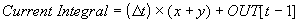
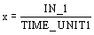
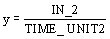

Integrator function block execution
The Integrator function block integrates a variable over time. The integrated or accumulated value (OUT) is compared to pre-trip and trip limits. When the limits are reached, discrete output signals are generated (OUT_PTRIP and OUT_TRIP). You choose whether the integrated value increases from 0 or decreases from the trip value (SP). The block has two inputs (IN_1 and IN_2) and can integrate positive, negative, or net flow.
The transfer equation used in the Integrator function block is:

where
Δ t = the elapsed time since previous cycle, in seconds
x = the converted IN_1 value (based on the options you configure)
y = the converted IN_2 value (based on the options you configure) or 0 when you select not to use a second input
OUT[t-1] = the value of OUT from the previous cycle.
You can select integration type options that define the integrate up, integrate down, and reset characteristics of the block. Refer to the Integration Types section below for information on these options. When you select the SP to 0 - auto reset or SP to 0 - demand reset integration type option, the following applies:
OUT = SP – TOTAL
For all other integration types:
OUT = TOTAL
In the above graph, read PRE_TRIP as the distance below SP where OUT_PRETRIP is set.
You can specify how the block executes by configuring input flow and rate time variables, integration type and carryover options as well as trip and pre-trip action.
In the above example, IN_1 and RESET are inputs. IN_2 is not connected. Integration proceeds from 0 to SP. From t = 0 until ta, there is ramp input. For t > ta, the input drops to a lower constant value.
Note the output produced by integrating this input pattern. The ramp input integrates into a parabolic curve between t =0 and t = ta. Beyond ta, the constant input integrates into a ramp output with a constant slope. At tb, OUT reaches the level SP-PRE_TRIP. OUT_PTRIP transitions from 0 to 1. It remains at 1 until tc, where OUT reaches SP. At this point, OUT_PTRIP returns to 0 while OUT_TRIP transitions from 0 to 1. OUT_TRIP remains at 1 for 5 seconds or for the duration of the scan rate if it is greater than 5 seconds. It then returns to 0.
At tc, when OUT reaches SP, OUT is reset to 0, and the integration resumes anew. At td, the RESET_IN input transitions to 1, interrupts the integration, and resets OUT to 0.
Specifying rate time base
The time unit parameters (TIME_UNIT1 and TIME_UNIT2) specify the rate time base of the inputs (IN_1 and IN_2, respectively). The block uses the following equations to compute the integration increment:


where
x = the converted IN_1 value (based on the options you configure)
y = the converted IN_2 value (based on the options you configure) or 0 when you select not to use a second input.
The block supports the following options for TIME_UNIT1 and TIME_UNIT2:
Seconds (= 1 second)
Minutes (1 minute = 60 seconds)
Hours (1 hour = 3600 seconds)
Days (1 day = 86,400 seconds)
Setting reverse flow at the inputs
Reverse flow is determined by either of the following:
The sign of the value at IN_1 or IN_2
The discrete inputs REV_FLOW1 and REV_FLOW_2
When the REV_FLOW input is True, the block interprets the associated IN value as negative.
Calculating net flow
Net flow is calculated by adding the increments calculated for each IN. When ENABLE_IN_2 is False, the increment value for IN_2 is considered 0. When ENABLE_IN_2 is True, the value of IN_2 is used in the calculation.
You can determine the net flow direction that is to be included in the integration by configuring the Flow Forward and Flow Reverse integration options parameter (INTEG_OPTS). When Flow Forward is True, positive increments are included. When Flow Reverse is True, negative increments are included. When both Flow Forward and Flow Reverse are True, both positive and negative increments are included.
Integration types
The integration type parameter (INTEG_TYPE) defines the integrate up, integrate down, and reset characteristics of the block. You can select from the following options:
0 to SP - auto reset at SP — Integrates from 0 to the setpoint (SP) and automatically resets when SP is reached.
0 to SP - demand reset — Integrates from 0 to SP. When OUT is within PRE_TRIP of SP, OUT_PTRIP is set. When OUT reaches SP, OUT_TRIP is set and the block continues integrating beyond SP.
SP to 0 - auto reset at SP — Integrates from SP to 0 and automatically resets when 0 is reached.
SP to 0 - demand reset — Integrates from SP to 0. When OUT is within PRE_TRIP of 0, then OUT_PTRIP is set. When OUT reaches SP, OUT_TRIP is set and the block continues integrating below 0.
0 to ? - periodic reset — Counts upward and resets periodically. The period is set by the CLOCK_PER parameter.
0 to ? - demand reset — Counts upward and is reset when RESET_IN or OP_CMD_INT transitions to True.
0 to ? - periodic & demand reset — Counts upward and is reset periodically or when RESET_IN or the OP_CMD_INT transitions to True.
The following table summarizes the trip, pre-trip and reset conditions for each of the mutually exclusive INTEG_TYPE options:
Trip and pre-trip action
When the integration value reaches SP – PRE_TRIP (or 0 + PRE_TRIP if the integrator runs from SP to 0), OUT_PTRIP is set. When the integration value reaches the trip target value (SP or 0), OUT_TRIP is set. OUT_PTRIP remains set until integration is reset.
Integration carryover
You can enable the Carry integration option (INTEG_OPTS) to carry the excess past the trip point into the next integration cycle as the initial value of the integrator when either of the following integration types is set:
0 to SP - auto reset at SP
SP to 0 - auto reset at SP
Note that there must be at least five seconds between resets. SP must be large enough so that it takes more than five seconds for OUT to reach SP.